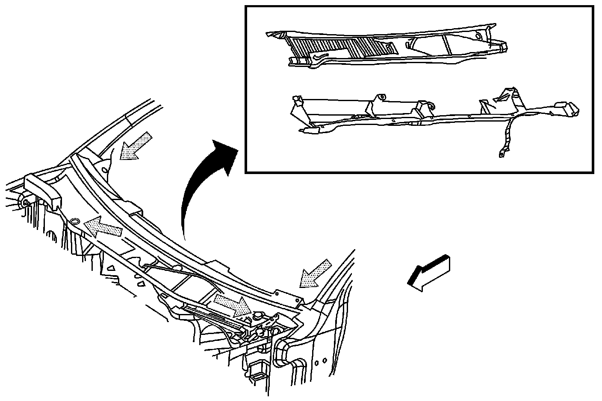

Exterior Moulding / Trim: Description and Operation
Water Management Description and Operation
Air Inlet Grille Panel Water Flow Direction and Cleaning
A large percentage of water will flow off the windshield area into the air inlet grille panel drain system and then down the outside on the air inlet grille panel to the underside of the vehicle. To ensure that the air inlet grille panel water management system performs properly, the air inlet grille panel, and drains must not be blocked with debris.
In the graphic below the gray arrows show the water flow direction in the air inlet grille panel and drains system.

The air inlet grille panel is located in front of the windshield.
1. Remove the upper air inlet grille panel. Refer to Air Inlet Grille Panel Replacement (Service and Repair) .
2. Clean the lower air inlet grille panel of debris blockage.
3. Flush the lower air inlet grille panel with clean water.
4. Install the upper air inlet grille panel. Refer to Air Inlet Grille Panel Replacement (Service and Repair) .